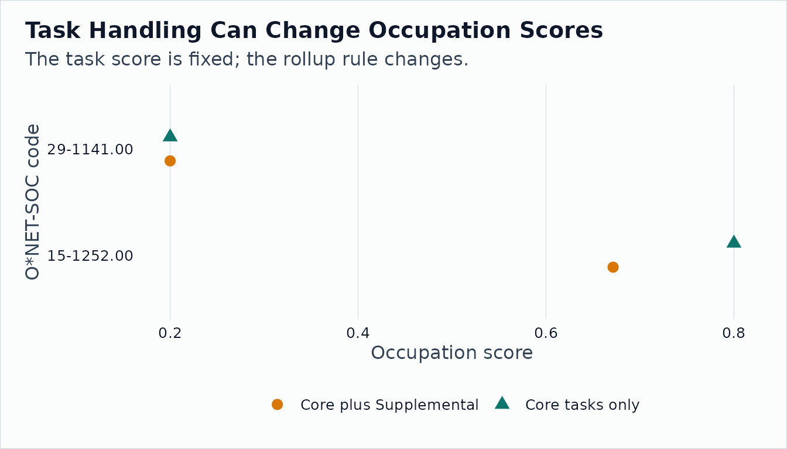

Many user measures start at the task level: a researcher labels
tasks, a model scores task text, or a team codes task exposure manually.
Occupation-level analysis needs one score per occupation.
onet_task_to_occupation() performs that mechanical rollup
using O*NET task ratings.
Read Task Statements and Ratings
tasks <- onet_archive_read(
"30.3",
"Task Statements",
path = archive_dir,
release_date = "2026-05-01"
)
ratings <- onet_archive_read(
"30.3",
"Task Ratings",
path = archive_dir,
release_date = "2026-05-01"
)
tasks |>
select(onet_soc_code, task_id, task_type, task) |>
onet_kable()
| 15-1252.00 |
1001 |
Core |
Analyze user needs and software requirements. |
| 15-1252.00 |
1002 |
Supplemental |
Prepare reports on software testing status. |
| 29-1141.00 |
2001 |
Core |
Monitor patient health and record signs. |
ratings |>
select(onet_soc_code, task_id, scale_id, scale_name, data_value) |>
head(8) |>
onet_kable()
| 15-1252.00 |
1001 |
RT |
Relevance of Task |
95.0 |
| 15-1252.00 |
1001 |
IM |
Importance |
4.5 |
| 15-1252.00 |
1002 |
RT |
Relevance of Task |
45.0 |
| 29-1141.00 |
2001 |
RT |
Relevance of Task |
98.0 |
| 29-1141.00 |
2001 |
IM |
Importance |
4.8 |
Validate Task Scores
task_scores <- tibble::tibble(
task_id = c("1001", "1002", "2001"),
score = c(0.80, 0.40, 0.20)
)
measure <- onet_measure(
task_scores,
key = "task_id",
score = "score",
key_type = "task",
universe = tasks$task_id,
measure_id = "stylized_task_score",
release_version = "30.3"
)
onet_coverage(measure) |>
onet_kable()
Roll Up with Relevance Weights
core_only <- onet_task_to_occupation(
measure,
task_ratings = ratings,
task_metadata = tasks,
weight_scale = "RT",
include_supplemental = FALSE
)
core_plus_supplemental <- onet_task_to_occupation(
measure,
task_ratings = ratings,
task_metadata = tasks,
weight_scale = "RT",
include_supplemental = TRUE
)
core_only |>
select(onet_soc_code, soc_code, n_tasks, total_task_weight, measure_score) |>
onet_kable()
| 15-1252.00 |
15-1252 |
1 |
95 |
0.8 |
| 29-1141.00 |
29-1141 |
1 |
98 |
0.2 |
core_plus_supplemental |>
select(onet_soc_code, soc_code, n_tasks, total_task_weight, measure_score) |>
onet_kable()
| 15-1252.00 |
15-1252 |
2 |
140 |
0.671 |
| 29-1141.00 |
29-1141 |
1 |
98 |
0.200 |
Interpret the Plumbing Choice
comparison <- bind_rows(
core_only |> mutate(rule = "Core tasks only"),
core_plus_supplemental |> mutate(rule = "Core plus Supplemental")
) |>
select(rule, onet_soc_code, n_tasks, total_task_weight, measure_score)
comparison |>
onet_kable()
| Core tasks only |
15-1252.00 |
1 |
95 |
0.800 |
| Core tasks only |
29-1141.00 |
1 |
98 |
0.200 |
| Core plus Supplemental |
15-1252.00 |
2 |
140 |
0.671 |
| Core plus Supplemental |
29-1141.00 |
1 |
98 |
0.200 |
ggplot2::ggplot(comparison, ggplot2::aes(
x = measure_score,
y = onet_soc_code,
color = rule
)) +
ggplot2::geom_point(
ggplot2::aes(shape = rule),
size = 3,
position = ggplot2::position_dodge(width = 0.45)
) +
ggplot2::labs(
title = "Task Handling Can Change Occupation Scores",
subtitle = "The task score is fixed; the rollup rule changes.",
x = "Occupation score",
y = "O*NET-SOC code",
color = NULL,
shape = NULL
) +
ggplot2::scale_color_manual(
values = c(
"Core tasks only" = onet2r_colors[["teal"]],
"Core plus Supplemental" = onet2r_colors[["amber"]]
)
) +
onet2r_theme()

The task score did not change; only the rollup rule did. A clear
write-up keeps the scoring choice separate from the package
mechanics.